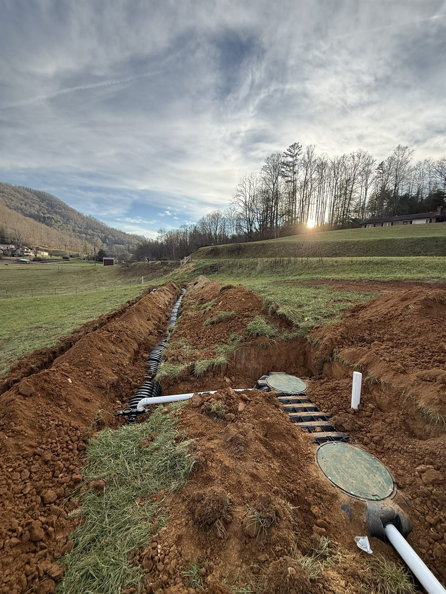
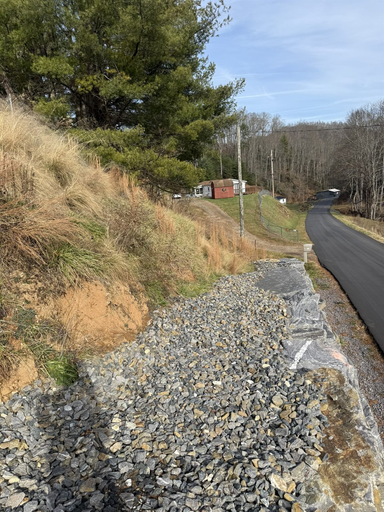

Drainage
Stormwater management, culverts, swales, and riprap for the tight, water-prone ground of the French Broad valley.
View serviceMarshall is the seat of Madison County, squeezed onto a narrow shelf between the French Broad River and the steep slopes above it. Working ground this tight is a skill, and it is one we have.

Marshall is one of the most dramatically sited county seats in the state, a single main street pinched between the French Broad River, the railroad, and a wall of mountainside. That geography defines the work: sites are tight, the river and its floods are never far away, and the slopes above town shed water and soil that have to be managed.
We reach Marshall from Burnsville in about fifty minutes by way of Mars Hill. On ground this constrained, experience matters more than raw horsepower, and we bring earthwork, drainage, and bank stabilization that respect a tight footprint and a river that does not forgive shortcuts.

A tight valley floor and the French Broad running through it make drainage and bank work central to nearly every Marshall job.
Careful cut and fill and pad prep on constrained lots where there is no room to waste and no margin for a sloppy grade.
Culverts, swales, and riprap that manage runoff from the slopes above town and keep water moving through a tight valley floor.
Grading, riprap, and boulder work to hold creek and river banks and steep cuts against the next high water.
On the constrained ground of the Madison County seat, we work clean, drain deliberately, and hold the banks.
Stormwater management, culverts, swales, and riprap for the tight, water-prone ground of the French Broad valley.
View servicePrecision grade and careful cut and fill on the constrained lots of the Madison County seat.
View serviceClearing, undercut, and subgrade prep worked cleanly on tight Marshall sites.
View serviceRetaining walls and riprap to stabilize steep cuts and river banks around Marshall.
View serviceAccess and driveways graded to climb the slopes above the French Broad and drain properly.
View serviceTell us about the property and the scope. We'll get back fast.